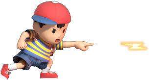

A lot of people thing ness is "broken" in smash, but is he really as toxic as some claim?

A lot of people think Ness, specifically "pk fire" are broken, today Im here
to explain why that idea is wrong, not only is ness not broken, he is pretty mush S+ teir.